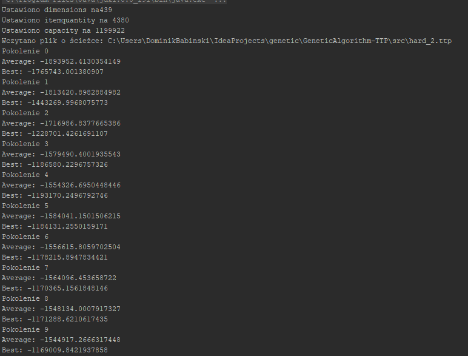

Traveling Thief Problem
GithubAbout project
This is solo project in java with solution to combined problems of travelling salesman and knapsack problems. Algorithm recieves list of cities and items in them. The heavier backpack, the slower is the movement. Goal is to optimize the cost function.
 Algorithm output
Application utilises genetic algorithms to search for optimal solution via evolution. Have used few approaches to achieve the best scores including changing parameters, elitism and different breeding rules, for ex. roulette or tournament.